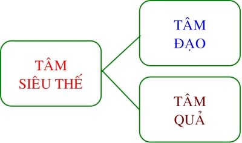
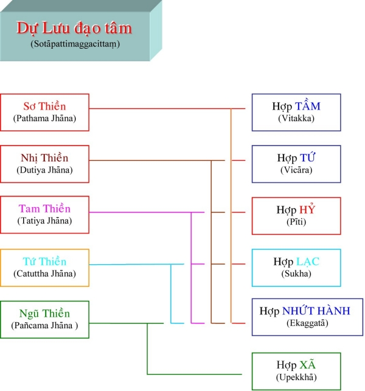
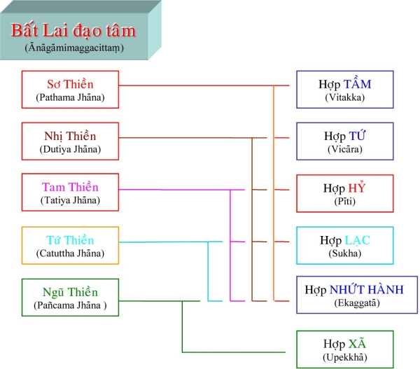
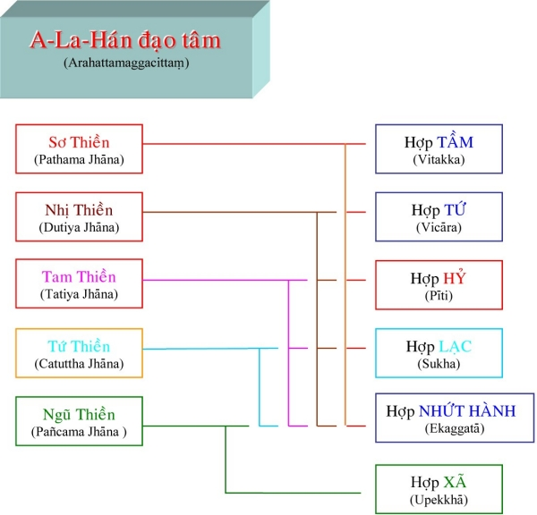
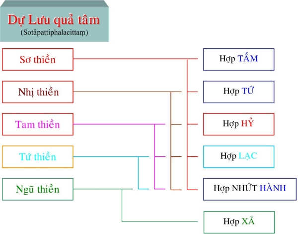
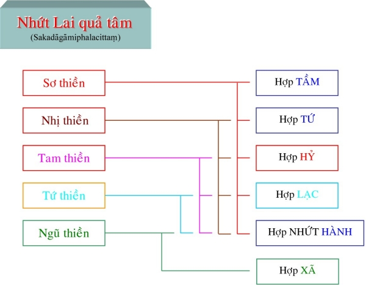
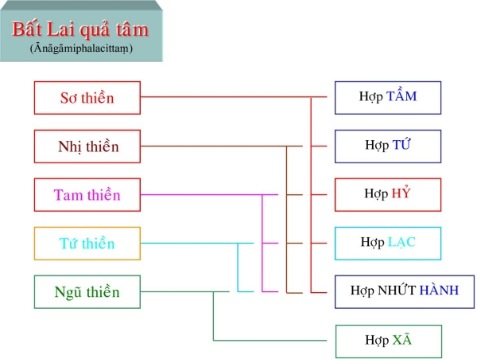
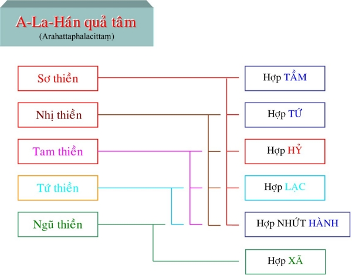

|
PHẬT GIÁO NGUYÊN THỦY THERAVÀDA VI DIỆU PHÁP BAN HOẰNG PHÁP |
|
BuddhaSasana Home Page |
Vietnamese, with Unicode VU Times or CN-Times font |
|
|
PHẬT GIÁO NGUYÊN THỦY THERAVÀDA VI DIỆU PHÁP BAN HOẰNG PHÁP |
|
Xin lưu ý: Cần có phông UnicodeViệt-Phạn VU Times hay CN-Times cài vào máy để đọc các chữ Pàli. |
|
BÀI 10-b (2) Quá trình thực hành Ðể đạt kết quả mỹ mãn, trước khi hạ thủ công phu, hành giả phải tự biết rõ tính nết của mình rồi chọn một trong những đề mục kể trên, đề mục nào thích hợp với cá tánh để hành tập. Căn tính của chúng sanh được phân làm 6 loại: Tham tánh (Rāgacarito), đề mục thích hợp là 10 đề mục tử thi và thân hành niệm. Sân tánh (Dosacarito), đề mục thích hợp là Từ, Bi, Hỷ, Xã, Xanh, Vàng, Ðỏ, Trắng. Si tánh (Mohacarito), đề mục thích hợp là pháp số. Tín tánh (Sañhācarito), đề mục Phật, Pháp, Tăng, Giới, Thí, Thiện thích hợp với người nặng về tánh đức tin. Giác tánh (Buñhicarito), đề mục thích hợp gồm có: niệm về sự chết, niệm tịch tịnh, đề mục phân biệt, đề mục tưởng về sự ô trược của vật thực. Tầm tánh (Vitakkacarito), thích hợp với đề mục pháp số Ðề mục Ðất, Nước, Lửa, Gió, Hư không, Ánh sáng và bốn đề mục vô sắc thích hợp với mọi tánh nết. Hành giả nếu tu thiền chỉ một thời gian sẽ chứng được 5 diệu trí (Thần thông trí, thắng trí): - Thần thông trí (Iddhividhaññāna). Ðó là thành quả cao tột trong thiền chỉ. Muốn tiến đến pháp xuất thế gian, hành giả phải chứng được Lậu tận trí (Āsavakkhayaññāna), muốn chứng được Lậu tận trí hay trở thành vị Arahan (A-La-Hán) thì hành giả phải gia công tu tập thiền quán (Vipassanā). Thiền quán là phương pháp tu tập dùng trí tuệ quan sát tất cả mọi sự vật để thấy rõ được thực tướng, dứt trừ các phiền não. Nếu thiền chỉ là pháp định tâm để chế ngự phiền não, thì thiền quán là pháp tản tâm để phá hoại, diệt tận phiền não. Người ta còn so sánh: nếu thiền chỉ là tay nắm cỏ thì thiền quán là liềm cắt cỏ; nếu thiền chỉ như đứng tấn vửng thì thiền quán là tay lẩy tên; nếu thiền chỉ là ngăn tâm động thì thiền quán là khơi tâm chìm. Muốn tu thiền quán ta phải biết qua bảy pháp thanh tịnh (Xisuddhi). Trong pháp thất tịnh thì hai pháp đầu thuộc về thiền chỉ, còn năm pháp sau thuộc về thiền quán. Bảy pháp thanh tịnh ấy là: 1) Giới Tịnh (Sīlavisuddhi) Hành giả phải gìn giữ giới luật (ngũ giới hay bát giới của cư sĩ; thập giới của vị sadi; 227 giới của vị tỳ kheo) cho được trong sạch thì tâm mới được thanh tịnh. Giới thanh tịnh có 4 là: - Giới Bổn Thanh Tịnh (Pātimokkhasamsavarasīlam): dùng đức tin trong sạch để chế ngự thân và khẩu. - Thu Thúc Căn Tịnh (Indriyasamvasrasīlam): dùng chánh niệm để tránh phiền não sanh khởi khi lục căn tiếp xúc với lục trần. - Chánh Mạng Giới Tịnh (Ājīvapārisuddhi): cư sĩ không hành nghề bất chánh, vị tì khưu không dùng các phương cách sai trái để hút máu tín đồ. - Quán Tướng Thanh Tịnh (Paccayasannissitasīlam): sự thanh tịnh nhờ quán xét bốn món vật dụng thờng ngày. 2) Tâm Tịnh (Cittavisuddhi) Hành giả tu thiền định, khi sắp nhập định (cận định – Upacārasamādhi), hay khi nhập định (Appanārasamādhi), tâm được yên tỉnh, yên lặng được các triền cái. Chi pháp ở đây là Nhất Hành (Ekaggatācetasika). Tâm tịnh có hai: - Cận Hành Ðịnh (Upacārasamādhi): là loại định trong dạng tâm thiện. - An Chỉ Ðịnh (Appanāsamādhi): là định trên cảnh chế định hay cảnh chân đế mà hành giả dùng làm đề mục để thiền quán. Khi tu Thiền Quán (Suddhivipassanāyānika), hành giả đạt đến tiểu khắc định (định tạm thời – Khanikasamādhi); định này cũng được coi là cận định (Upacārasamādhi) 3) Kiến Tịnh (Diṭṭhivisuddhi) Hành giả dùng trí tuệ xem xét rõ về người, thú, tôi, ... để thấy chúng chỉ là do ngũ uẩn hợp thành hay nói khác đi chúng chỉ là Danh và Sắc họp lại trong đó yếu tố sắc là những nguồn hiện tượng luôn luôn biến đổi, sinh diệt theo định luật tự nhiên còn gọi là tam tướng (vô thường, khổ não và vô ngã) chứ không có tự ngã, linh hồn hay một cá thể nào đơn thuần và bất biến. Hành giả còn thấy rõ nguyên nhân phối hợp của chúng là do bốn nhân trong kiếp quá khứ (vô minh, ái, chấp thủ và nghiệp) và nhân hiện tại là vật thực (Āhāra), nhân duy trì kiếp sống. Hành giả cũng thấy rõ nguyên nhân sanh khởi của tâm pháp, như nhãn thức được sanh khởi do 4 nguyên nhân chính là: cảnh sắc, nhãn vật, ánh sáng và tác ý (sự chú ý). Nhĩ thức ... cũng có các nguyên nhân tương tự. Tịnh pháp này lấy Danh Sắc phân tích tuệ (Nāmarūpaparicchedañāna) là tuệ đầu tiên của 16 Minh Sát Tuệ làm chi pháp cốt lõi, tuệ này là loại trí chia chẻ, phân tích Danh Sắc theo thực thể (Sabhāva) đúng với sự thật. Ðược gọi là Kiến Tịnh vì nó có tính cách thanh lọc thân kiến (Sakkāyadiṭṭhi) và ngã kiến (Attadiṭṭhi) của hành giả. 4) Ðoạn Nghi Tịnh (Kankhāvitaranavisuddhi) Khi hành giả hiểu rõ rằng hiện tại được hình thành bởi những nguyên nhân trong quá khứ và hiện tại sẽ là nguyên nhân của tương lai. Sự việc đó được tái diễn liên tục tiếp nối thành một chuỗi dài vô tận. Hành giả còn biết rằng sự tái diễn đó chỉ chấm dứt khi hành giả chứng đạt được quả vị A-La-Hán. Nhờ những sự hiểu biết đó, hành giả không còn hoài nghi về quá khứ, hiện tại và vị lai, trạng thái đó gọi là đoạn nghi tịnh. Tiếp theo, hành giả suy niệm rằng tất cả các pháp đều do nhân duyên cấu tạo thành (pháp hành hay pháp hữu vi – Sankāra –), có duyên hiện khởi ắt phải có duyên diệt tắt, đó là định luật chung cho tất cả gọi là vô thường (Anicca) mà cái gì vô thường thì tất nhiên là khổ (Dukka) vì không có một thực hữu nào thường hằng với thời gian và không gian đó là hiện tượng vô ngã (Anatta). Với những nhận thức đó, hành giả thành tựu được phổ thông tuệ (Sammāsananāna). Tịnh pháp này lấy Duyên Ðạt Tuệ (Paccayaparigga hañāna) là thiền tuệ thứ hai của 16 Minh Sát Tuệ làm chi pháp cốt lõi, đây là trí tuệ ghi nhận các duyên trợ của Danh Sắc bản thân. Ðược gọi là Ðoạn Nghi Tịnh bởi nó giúp hành giả tránh được tám nghi hoặc: Buddhe Kankhati: Nghi ngờ về Ðức Phật, về ân đức tối thượng của ngài. Dhamme Kankhati: Nghi ngờ về giáo pháp, ân đức, công năng của giáo pháp. Sanghe Kankhati: Nghi ngờ về chư Tăng, về ân đức và pháp tánh của chư tăng. Shikkhāya Kankhati: Nghi ngờ về tam học, về công năng và lợi ích của tam học. Pubbante Kankhati: Nghi ngờ về vấn đề hiện hữu trong quá khứ. Aparante Kankhati: Nghi ngờ về vấn đề hiện hữu trong tương lai. Pubbantāparante Kankhati: Nghi ngờ về vấn đề hiện hữu trong cả hai thời điểm quá khứ và tương lai. Idappaccayatā paticcasamuppannesu ca dhammesu Kankhati: Nghi ngờ về định lý duyên sinh tập khởi. 5) Ðạo Phi Ðạo Tri Kiến Tịnh (Maggāmaggañānadassanavisuddhi) Sau khi dứt trừ mối nghi ngờ về quá khứ, hiện tại, vị lai; hành giả tiếp tục quán tưởng về luật tam tướng cho đến khi thình lình tự thân hành giả phát ra ánh sáng phỉ lạc ... đó chỉ là những phiền não mà hành giả cần phải vượt qua. 10 phiền não ấy là: Hào quang (Obhāsa). Khi những triệu chứng này phát sanh, hành giả không nên khởi tâm ưa thích, mà phải nhận thức rằng đó là những chướng ngại, ngăn chận sự tiến bộ của hành giả. Hành giả phải luôn luôn ý thức đến mục tiêu của mình để vượt qua mười phiền não đó. Khi hành giả đã liểu tri, thắng vượt 10 pháp Upakkilesa gọi là Ðạo Phi Ðạo Tri Kiến Tịnh. Ở giữa tuệ thứ ba (Thẩm Sát Tuệ - Sammasanañāna) và tuệ thứ tư (Sanh Diệt Tuệ - Udayabbayañāna) của 16 Tuệ Minh Sát được gọi là Ðạo Phi Ðạo Tri Kiến Tịnh. Vì hai Tuệ này giúp hành giả tạm thời thoát khỏi ba pháp ràng buộc (Gāha): Ái (Tanhā), Mạn (Māna) và Kiến (Diṭṭhi) trong mười phiền não. Lúc Sanh Diệt Tuệ còn muội lược (non yếu - Tarunudayabbayañāna), hành giả ghi nhận được sự sanh diệt của Danh Sắc khi có phiền não (kilesa) khởi lên, hành giả không bám víu, ôm ấp mà lại càng vững mạnh kiên trụ thêm nữa, càng lúc, hành giả càng thấy rõ thêm sự sanh diệt của Danh Sắc nên được gọi là Ðạo Phi Ðạo Tri Kiến Tịnh. 6) Tiến Hành Tịnh (Patipadāñānadassanvisuddhi – Hành Lộ Tri Kiến Tịnh) Sau khi thoát ly được 10 phiền não, hành giả tiếp tục quán luật tam tướng (Vô Thường, Khổ não và Vô ngã). Hành giả sẽ thoát khỏi ba kiến chấp sai lầm: Thường tưởng, Lạc tưởng và Ngã tưởng; thấy rõ về sự sanh khởi và diệt tận của các pháp hữu vi, dần dần chánh trí sẽ phát sanh, thành tựu đạo quả, chứng ngộ Niết-Bàn. Chánh trí có 10 thứ là: Sanh diệt trí (Udayabbayaññāna) Sau khi tỏ ngộ lý sanh diệt một cách rõ ràng tức hành giả đã thành tựu được Sanh diệt tuệ (Udagavayañāna) hay Sanh diệt trí. Hoại diệt trí (Bhangaññāna) Trong hai trạng thái sanh diệt thì trạng thái diệt nổi bậc và tạo ấn tượng sâu sắc cho hành giả ( vì khi chưa có mà phát khởi thì khó nhận hơn là đã có mà bị diệt mất). Dần dần, hành giả chỉ nhận thấy sự diệt tắt của Danh Sắc mà thôi. Giai đoạn này gọi là Ðoạn diệt tuệ hay Hoại diệt trí. Hãi kinh trí (Bhavyatūpatthānaññāna) Sau khi thấy rõ bản chất thật sự của Danh Sắc, đến giai đoạn nào đó, hành giả sẽ thấy tất cả những gì bị sanh diệt đều là đáng sợ. Trạng thái này gọi là Kinh Hãi Tuệ hay Hãi Kinh Trí. Quả hoạn trí (Ādīnavaññāna) Khi thấy Danh Sắc là đáng sợ, hành giả gom tâm suy niệm về tánh chất nguy hiểm, đáng sợ; thấy rõ Danh Sắc là nền tảng tạo ra mọi sự thống khổ. Trạng thái này gọi là Hoạn Họa Tuệ hay Quả Hoạn Trí. Yếm ố trí (Nibbidāññāna) Lúc bấy giờ, hành giả thấy nhàm chán Danh Sắc vô cùng, hành giả muốn thoát ly Danh Sắc, muốn được giải thoát ngay. Trạng thái này là Dục Ly Tuệ hay Yếm Ố Trí. Dục thoát trí (Muñcitukāmyatāñāna) Lòng tham muốn ấy khiến cho hành giả khởi nhiệt tâm quyết làm thế nào để tiến đạt giải thoát ngay tức khắc. Trạng thái đó gọi là Quyết Ly Tuệ hay Dục Thoát Trí. Giảm trạch trí (Paṭisankhāraññāna) Dần dần hành giả ý thức rằng sự nôn nóng, sôi nổi, khó đạt đến kết quả, hành giả bắt đầu dịu lại trong việc tu tập. Hành xã trí (Sankhārupekkhāñāna) Dần dần tâm hành giả trở lại trạng thái thản nhiên, quân bình. Trạng thái này gọi là Xã Tuệ hay Hành Xã Trí. Thuận thứ trí (Anulomaññāna) Nếu đủ căn duyên tiến đến đạo quả, hành giả sẽ đạt đến trạng thái tâm thuần thục, khi ấy, hành giả lấy một trong ba tướng (Vô thường, Khổ, Vô ngã) làm đề mục tu tập. Khi thấy rõ tam tướng, tâm hành giả hướng đến đối tượng giải thoát (Niết-Bàn). Giai đoạn này gọi là Thuận Thứ Trí. Chuyển tộc trí (Gotrabhūññāna) Tuệ Thuận Thứ chỉ tồn tại nơi hành giả trong một sát na tâm, sau tuệ này, tâm hành giả chuyển sang đối tượng Niết-Bàn. Sự biến chuyển này được xem là một bước nhảy vọt đến bờ kia nên gọi là Tuệ Bỏ Bực hay Chuyển Tộc Trí. Sau giai đoạn chuyển tộc trí là hành giả đã tiến gần đến đạo quả giải thoát, phiền não được sát trừ. Giai đoạn này hành giả thấu rõ được đạo quả Niết-Bàn. 7) Tri Kiến Tịnh (Nānadassanavisuddhi) Tri kiến tịnh là trí tuệ giác hay đạo tuệ giúp hành giả đoạn trừ tám hôn kiến do vô minh sanh ra; tám hôn kiến đó là: Không biết thân tâm, Danh Sắc là khổ. Không ý thức rằng do hỷ ái (Nandī) mà đau khổ phát sanh. Không tin rằng Niết Bàn là cứu cánh thoát khổ. Không biết rằng Bát Thánh Ðạo là con đường dẫn tới Niết Bàn. Không biết có đời trước (bất tri tiền thân). Không biết có đời sau (bất tri hậu thân). Không biết lý tái sanh, cho rằng thân này đơn thuần do cha mẹ tạo ra và sau khi chết sẽ không còn gì nữa. Không biết lý nhân quả trong mọi loài. Chính nhờ tuệ giác này, hành giả hiểu rằng Khổ Ðế nên biết, Tập Ðế nên diệt, Diệt Ðế nên chứng và Ðạo Ðế nên hành. - Hành giả thấy rõ rằng tất cả chúng sanh đều bị các khổ đau như già, bịnh, chết, ưu, bi ai, não, ... chi phối. Các sự đau khổ này do sự sinh là nhân tập khởi; chính Niết-Bàn là pháp đoạn diệt sự sinh, từ đó đoạn diệt các khổ; và chỉ có Bát Chánh Ðạo là con đường duy nhất dẩn đến Niết-Bàn. - Hành giả quán sát tiếp tục, thấy Hữu là nhân tập khởi các sự sinh. Sinh có 4 loại: Noãn sinh, Thai sinh, Thấp sinh và Hóa sinh. Tất cả 4 thứ sinh này đều do Hữu là nhân tập khởi; Niết-Bàn là pháp đoạn diệt Hữu, từ đó đoạn diệt sinh; Bát Chánh Ðạo là con đường đưa đến Niết-Bàn. - Hành giả quán sát tiếp tục, thấy Thủ là nhân tập khởi các Hữu, Hữu có 3 loại: Dục Hữu, Sắc Hữu, và Vô Sắc Hữu; tất cả 3 thứ Hữu đó đều do Thủ là nhân tập khởi; Niết-Bàn là pháp đoạn diệt Thủ, từ đó đoạn diệt Hữu; Bát Chánh Ðạo là con đường đưa đến Niết-Bàn. - Hành giả quán sát tiếp tục, thấy Ái là nhân tập khởi các Thủ, Thủ có 4 loại: Dục Thủ, Tà Kiến Thủ, và Tà Giới Thủ và Ngã chấp Thủ; tất cả 4 thứ Thủ đó đều do Ái là nhân tập khởi; Niết-Bàn là pháp đoạn diệt Ái, từ đó đoạn diệt Thủ; Bát Chánh Ðạo là con đường đưa đến Niết-Bàn. - Hành giả quán sát tiếp tục, thấy Thọ là nhân tập khởi các Ái, Ái có 3 loại: Dục Ái, Hữu Ái, và Phi Hữu Ái; tất cả 3 thứ Ái đó đều do Thọ là nhân tập khởi; Niết-Bàn là pháp đoạn diệt Thọ, từ đó đoạn diệt Ái; Bát Chánh Ðạo là con đường đưa đến Niết-Bàn. - Hành giả quán sát tiếp tục, thấy Xúc là nhân tập khởi các Thọ, Thọ có 5 thứ là Thọ Khổ, Thọ Lạc, Thọ Ưu, Thọ Hỷ và Thọ Xã; Thọ có 6 loại: Nhãn Thọ, Nhĩ Thọ, Tỷ Thọ, Thiệt Thọ, Thân Thọ và Ý Thọ; tất cả 6 thứ Thọ đó đều do Xúc là nhân tập khởi; Niết-Bàn là pháp đoạn diệt Xúc, từ đó đoạn diệt Thọ; Bát Chánh Ðạo là con đường đưa đến Niết-Bàn. - Hành giả quán sát tiếp tục, thấy Lục Nhập là nhân tập khởi các Xúc, Xúc có 6 loại: Nhãn Xúc, Nhĩ Xúc, Tỷ Xúc, Thiệt Xúc, Thân Xúc, Ý Xúc; tất cả 6 thứ Xúc đó đều do Lục Nhập là nhân tập khởi; Niết-Bàn là pháp đoạn diệt Lục Nhập, từ đó đoạn diệt Xúc; Bát Chánh Ðạo là con đường đưa đến Niết-Bàn. - Hành giả quán sát tiếp tục, thấy Danh Sắc là nhân tập khởi các Lục Nhập, Lục Nhập là 12 xứ họp thành, có 6 loại: Nhãn Nhập, Nhĩ Nhập, Tỷ Nhập, Thiệt Nhập, Thân Nhập, Ý Nhập; tất cả 6 thứ Nhập đó đều do Danh Sắc là nhân tập khởi; Niết-Bàn là pháp đoạn diệt Danh Sắc, từ đó đoạn diệt Lục Nhập; Bát Chánh Ðạo là con đường đưa đến Niết-Bàn. - Hành giả quán sát tiếp tục, thấy Danh Sắc là nhân tập khởi các Nhập Danh là Thọ, Tưởng, Hành; Sắc là Tứ Ðại và 4 Sắc Y Ðại sinh. Tất cả Danh Sắc này đều do Thức là nhân tập khởi; Niết-Bàn là pháp đoạn diệt Thức, từ đó đoạn diệt Danh Sắc; Bát Chánh Ðạo là con đường đưa đến Niết-Bàn. - Hành giả quán sát tiếp tục, thấy Thức là nhân tập khởi các Danh Sắc, Thức ở đây là 32 tâm quả hiệp thế và được chia làm 6 loại: Nhãn Thức, Nhĩ Thức, Tỷ Thức, Thiệt Thức, Thân Thức và Ý Thức; tất cả 6 thứ Thức đó đều do Hành là nhân tập khởi; Niết-Bàn là pháp đoạn diệt Hành, từ đó đoạn diệt Thức; Bát Chánh Ðạo là con đường đưa đến Niết-Bàn. - Hành giả quán sát tiếp tục, thấy Hành là nhân tập khởi các Thức, Hành có 3 loại: Thân Hành, Khẩu Hành và Ý Hành; tất cả 3 thứ Hành đó đều do Vô Minh là nhân tập khởi; Niết-Bàn là pháp đoạn diệt Vô Minh, từ đó đoạn diệt Hành; Bát Chánh Ðạo là con đường đưa đến Niết-Bàn. - Hành giả quán sát tiếp tục, thấy Vô Minh là nhân tập khởi các Hành, Vô Minh có 4 loại: Bất tri Khổ, Bất tri Tập, Bất tri Diệt và Bất tri Ðạo; tất cả các sự Vô Minh đó đều do Lậu Hoặc là nhân tập khởi; Niết-Bàn là pháp đoạn diệt Lậu Hoặc, từ đó đoạn diệt Vô Minh; Bát Chánh Ðạo là con đường đưa đến Niết-Bàn. - Hành giả tiếp tục quán sát, thấy Lậu Hoặc là nhân tập khởi Vô Minh. Lậu Hoặc gồm có 3 là Dục Lậu, Hữu Lậu và Kiến Lậu. Niết-Bàn là pháp diệt tận các Lậu Hoặc. Bát Chánh Ðạo là con đường đưa đến Niết-Bàn. - Hành giả quán sát thấy rõ Tứ Diệu Ðế trong Thập Nhị Duyên Khởi như vậy là vị này đã thành tựu một trong tứ Thánh Quả, và sau khi thành tựu đạo quả, hành giả quán sát lại những phiền não đã diệt, những đạo quả đã chứng, trạng thái này gọi là Phản Khán Trí. Phản Khán Trí (Paccavekkhanañna) là trí tuệ của vị thánh nhơn sau khi đắc đạo quả xét lại đạo quả mình vừa chứng đắc, Niết-Bàn mình vừa tỏ ngộ và phiền não mình vừa sát trừ. - Ðối với Tu-Ðà-Huờn thì phản khán trí khởi lên, xét thấy Thân Kiến, Hoài Nghi và Tà giới thủ đối với mình đã tiêu diệt hoàn toàn do đạo quả mình vừa chứng đắc, vị ấy tin chắc rằng mình không còn tục sinh vào 4 đường ác đạo (Ðịa ngục, Ngạ quỷ, A-Tu-La và Bàng sanh), sau đời sống này, sẽ tái sinh không quá 7 kiếp trong cõi Dục Giới. - Ðối với vị Tư-Ðà-Hàm, khi phản khán trí khởi lên, thấy Dục Ái và Sân Hận đối với mình đã giảm nhẹ, do đạo quả mình đã chứng được. Sau đời hiện tại, chỉ phải tái sanh một lần nửa trong cõi Dục Giới. - Ðối với vị A-Na-Hàm thì phản khán trí khởi lên, xét thấy Dục Ái và Sân Hận đối với mình đã tiêu diệt hoàn toàn do nhờ đạo quả mình vừa chứng đắc. Sau kiếp sống này, sẽ sinh lên cõi Sắc Giới tịnh cư chứ không còn trở lại cõi Dục Giới nửa. - Ðối với vị A-La-Hán, khi phản khán trí khởi lên, vị ấy biết rõ tất cả các phiền não như Sắc ái, Vô sắc ái, Ngã mạn, Phóng dật, Vô minh, ... đối với mình nay đã hoàn toàn diệt tận, do nhờ đạo quả mình vừa chứng được. Sự tục sinh nay đã chấm dứt vì phạm hạnh đã hoàn thành, phận sự đáng làm, đã làm xong. Ðó là phản khán trí của các vị thánh nhơn. Tuy nhiên, cũng có những vị thánh nhơn sau khi chứng quả không quán xét lại các phiền não đã sát trừ và các phiền não chưa được sát trừ. Ðiều cần biết thêm ở đây là các hành giả tu tập Vipassanā, phải y cứ vào tam tướng phổ thông (Tīnilakkhanāni) là Vô Thường, Khổ Não, Vô Ngã. Ðạt được trí tuệ đầu tiên là Thẩm Nghiệm Trí (Sammasanañānaṃ). Thẩm Nghiệm Trí là trí tuệ suy xét về Ngũ uẩn (Sắc, Thọ, Tưởng, Hành, Thức) theo định luật tam tướng (vô thường, khổ não và vô ngã). - Sắc uẩn, dù quá khứ, hiện tại, vị lai, bên trong, bên ngoài, thô thiển, vi tế, hạ liệc, thù thắng, sắc viễn, sắc cận, ... đều là Vô Thường, Khổ Não và Vô Ngã (chẳng phải là ta, chẳng phải là của ta, chẳng phải là tự ngã của ta). - Thọ uẩn, dù thọ uẩn đã qua hay hiện tại, hoặc đã sanh khởi hay chưa sanh khởi, thọ bên trong hay bên ngoài, thọ thô hay thọ tế, ... đều là Vô Thường, thống khổ, phi ngã, phi ngã sở. - Tưởng uẩn, dù tưởng hiện tại, tưởng quá khứ, tưởng vị lai, tưởng nội phần, tưởng ngoại phần, tưởng thô, tưởng tế, tưởng hạ liệc, tưởng thù thắng, tưởng cận, tưởng viển, ... đều là Vô thường, Khổ não, Vô ngã. - Hành uẩn, dù quá khứ hành, hiện tại hành, vị lai hành, ... đều là Vô thường, Khổ não và Vô ngã. - Thức uẩn, dù quá khứ thức, hiện tại thức, vị lai thức, nội phần thức, ngoại phần thức, ... đều là Vô Thường, Khổ não và Vô ngã. Trí tuệ sơ khởi của hành giả tu tập Vipassanā là suy xét như trên. Tuy nhiên, không phải hành giả nào cũng có khả năng thấy rõ được hết ba tướng, nên tùy theo cá tánh của mỗi người được chia ra làm 3 loại tùy quán. - Vô Thường Tùy Quán (Aniccānupassanā): Nhờ trí tuệ mà thấy được sự đổi thay, sanh diệt của Danh Sắc; ở đây, ta cần hiểu rõ ba danh từ: Vô thường tánh: tính thể, tính chất của vô thường. Bộ chú giải Sammohavinodanī nói rằng: Danh Sắc là vô thường vì sau khi sanh khởi ắt bị hoại diệt (tính chất có rồi không – hutvā-abhāva). Ðể làm sáng tõ hơn, ta phải thấy Danh Sắc trên bốn khía cạnh sau: Uppādavayavantattā: Sự sanh diệt. Những gì do các duyên trợ tạo được gọi là pháp hữu vi (Sankhārā), quá trình tồn tại của chúng bao gồm ba giai đoạn: Sanh (Uppāda), Trụ (¿hiti), Diệt (Bhaṅga). Ba giai đoạn này là tướng của hữu vi pháp (Sankhāralakkhana) vậy. Cho nên cứ mỗi sát na tiểu (sanh, trụ, diệt) trôi qua là từng cái vô thường tướng trôi qua. Vô thường tùy quán ở đây không phải là niệm suông ṁọi vật có sanh ắt có diệt" mà phải thấy rõ các giai đoạn sanh, trụ, diệt (nhất là giai đoạn diệt) của Danh Sắc - Khổ não Tùy Quán (Dukkhānupassanā): Ở đây, hành giả ghi nhận rõ là ngũ uẩn, dù ở hoàn cảnh nào, trạng thái nào, lúc nào cũng có một khổ tánh cố hữu. Khổ tánh đó được chia ra làm ba phần sau: * Khổ khổ (Dukkhadukkha): là những sự đau đớn, nhức nhối, tê mỏi, lạnh nóng, rát, phỏng ... (thân thức thọ khổ) và sự buồn rầu, đau khổ, lo sợ, sự bất toại ý, ... (tâm thọ ưu). Những cảm giác của thân tâm (Danh Sắc, ngũ uẩn) như thế gọi là khổ khổ. * Hoại khổ (Viparināmadukkha): là cái khổ do sự sanh diệt liên tục của Danh Sắc. Ta khó ý thức hoại khổ trong sự khổ thân (thân thức thọ khổ), khổ tâm (tâm thọ ưu) vì chúng tiềm ẩn, không nổi bật như một buổi trưa hè nóng bức, một cơn gió mát thổi lên khiến ta thấy thoải mái (lạc thân lạc tâm sinh khởi), cái cảm giác khó chịu vì nóng nực không còn nửa (khổ thân khổ tâm bị hoại) nhưng ta không cảm thấy khổ vì sự hoại diệt đó vì ý thức hưởng thụ ở đây mạnh hơn. Ðối với lạc thân (thân thức thọ lạc) lạc tâm (tâm thọ hỷ) thì ta dễ ghi nhận hơn. Như lúc trời nóng ta đi tắm, nước mát làm ta thấy dể chịu, sau khi tắm xong, trời vẩn còn nóng thì cảm giác khổ lại sinh khởi tiếp tục, muốn dể chịu ta phải lập lại hành động trước. * Hành khổ (Sankhāradukkha): Sự sanh diệt liên tục của Danh Sắc (dù khổ hay lạc) được gọi là hành khổ, nó là một hệ thống sinh khởi, diễn tiến và hoại diệt của Danh Sắc do duyên tạo. Ý thức rõ ràng về hành khổ hành giả mới có khả năng đoạn trừ tuyệt căn các phiền não. - Vô Ngã Tùy Quán (Anattānupassanā): Pali có chú giải: Na attā – Anattā: không phải bản ngã tức là vô ngã vậy. Natthi attā etassa khandhapañ-cakassavā – Anattā: trong ngũ uẩn không có cái gọi là bản ngã nên gọi là vô ngã vậy. Thật ra vô ngã không phải chỉ có ở ngũ uẩn mà thôi, ngay cả Niết Bàn, chế định cũng là vô ngã. Trong bộ Parivāra (Luật tạng) Ðức phật có dạy: Các pháp hữu vi đều mang tướng trạng vô thường, khổ và vô ngã. Còn Niết-Bàn và chế định chỉ là vô ngã mà thôi (Aniccā sabbasanhatā dukkhānattā ca lakkhitā Nibbānaṃ ceva paññatti anattā iti nicchitā). Nói cách khác Anattā asaratthena (không có cái cốt lỏi căn bản là vô ngã) nghĩa là Danh Sắc được hình thành bởi duyên hợp, nếu lấy thọ và tưởng ra, Danh pháp không thành hình; nếu sự sống (Jīvita) biến mất, sức nóng (Usmāteja) không còn nữa, thì Sắc pháp cũng tan rả; diệt rồi sinh, sinh rồi diệt, Danh Sắc chỉ là một sự diễn tiến liên tục như vậy nên được gọi là vô ngã. Hành giả nào nhờ quán về Vô Thường mà được giải thoát, gọi là Vô Tướng Giải Thoát (Animittovimokkho); hành giả nào được giải thoát nhờ quán về Khổ não thì gọi là Vô Nguyện Giải Thoát (Appanihitovimokkho); hành giả nào nhờ quán Vô Ngã mà được giải thoát, gọi là Không Tánh Giải Thoát (Suññatāvimokkho). Ba phương pháp tu tập kể trên được gọi chung là Tam Giải Thoát Môn (Tīnivimokkhamukkha). Do quán Vô Thường, không còn chấp tướng mà được giải thoát nên gọi là Vô Tướng Giải Thoát Môn; do quán Khổ Não, không còn tham đắm dục lạc mà được giải thoát gọi là Vô Nguyện Giải Thoát Môn; do quán Vô Ngã, không còn chấp tự ngã mà được giải thoát, gọi là Không Tánh giải Thoát Môn. 1) Tâm sơ đạo (Sotapattimagga). Còn gọi là Tu-Ðà-Huờn đạo, là tâm chứng ngộ, thấy rõ Niết-Bàn lần đầu tiên, như người tìm hướng đi trong đêm tối, bổng có một tia chớp lóe lên giúp người đó nhận rõ hướng đi của mình là đúng. Do đó, đối với vị Tu-Ðà-Huờn, khi thấy rõ Niết-Bàn, vị ấy không còn quan niệm sai lầm về "cái này là tôi, cái này là của tôi, là tự ngã, Tôi", tức là đoạn diệt được Thân Kiến (Sakkāyadiṭṭhi). Bởi sự thật được thấy rõ, vị này thành tựu một ṅiềm tin bất thối", không còn sự hoài nghi đối với tam bảo, lý duyên khởi, ... (Si Hoài Nghi), tức là vị này đoạn được hoài nghi kiết sữ (Vicikicchā) và dứt mọi tà kiến, không gìn giữ sự cúng tế hay các điều luật tà vạy vô ích nửa, tức là vị này chấm dứt "giới cấm thủ" (Sīlabataparānāna). Khi chứng đắc Sơ đạo, vị này được gọi là Nhập Lưu (Sotāpana) nghĩa là bước vào dòng Thánh, sẽ trôi chảy Niết-Bàn. 2) Tâm nhị đạo (Sakadāganimagga). Còn gọi là tâm Tư-Ðà-Hàm Ðạo, là tâm liểu tri, chứng ngộ Niết-Bàn lần thứ hai, tâm đạo này làm giảm nhẹ hai phiền não kiết sữ: Dục Ái (Kāmarāga) và Sân Hận (Patigha). Ðạt được tâm đạo này hành giả chỉ còn phải trở lại cõi Dục giới một lần nửa mà thôi; do đó, còn gọi tâm đạo này là Nhất Lưu Ðạo Tâm. 3) Tâm tam đạo (Anāgamimagga). Còn gọi là tâm A-Na-Hàm Ðạo, là tâm chứng ngộ Niết-Bàn lần thứ ba. Tâm này diệt trừ hoàn toàn hai kiết sữ: Dục Ái và Sân Hận, nhờ đó mà hành giả sẽ không còn tái sanh vào cõi Dục giới nữa (vì nhân tái sanh cõi Dục giới là Dục Ái đã bị diệt mất), nên còn gọi tâm này là Bất Lai Ðạo Tâm. 4) Tâm tứ đạo (Arahattamagga). Còn gọi là A-La-Hán Ðạo tâm, là tâm chứng ngộ Niết-Bàn một cách rốt ráo. Những lần chứng ngộ trước, đối với hành giả, như những tia chớp lóe sáng lên rồi phụp tắc. Lần chứng ngộ thứ tư này, hành giả được bừng tỏ hoàn toàn như mặt trời hiện lên xóa tan đêm tối vậy. Tâm đạo này sát trừ trọn năm kiết sữ còn lại là: Ái Sắc (Rūparāga), Ái Vô Sắc (Aruparāga), Ngã Mạn (Māna), Phóng Dật (Uddhacca) và Vô Minh (Avijjā).  TÂM SIÊU THẾ 
  II. Tâm Quả Siêu Thế Là tâm thành tựu do tâm Ðạo Siêu Thế. Những tâm này được sanh lên ngay khi tâm đạo vừa diệt, liên tục không gián đoạn dù chỉ một tâm sát na. Những tâm quả này có trạng thái giống như tâm đạo, bắt một cảnh với tâm đạo, chỉ khác là những tâm này không sát trừ phiền não như tâm đạo (khi những tâm này sinh lên, thì phiền não đã bị các tâm đạo diệt tận). Tương ưng với tâm đạo, tâm quả Siêu thế cũng được chia làm 4 tâm: 1) Tâm Sơ Quả (Sotāpattiphalacittaṃ) Tâm Sơ Quả được chia ra làm ba loại: Ekabija: Nhất hườn sanh nhơn, là vị sơ quả này làm người một kiếp rồi đắc quả A-La-Hán hoặc các quả vị khác. Kolamhola: Ða lục hườn nhơn, là vị sơ quả tục sinh làm người từ hai đến sáu kiếp, sẽ đắc quả A-La-Hán hoặc các quả vị khác. Sattakkhataṃ: Ða thất hườn nhơn, vị này chậm trể lắm thì đến kiếp thứ bảy sẽ đắc quả A-La-Hán hoặc các quả vị khác. 2) Tâm Nhị Quả (Sokadāgāmiphalacittaṃ) Tâm Nhị Quả được chia làm năm bực: - Sau khi đắc Nhị quả, hành giả đắc luôn Tứ quả, chứng Niết-Bàn tại cõi Dục giới. - Chư Thiên đắc Nhị quả và đắc luôn Tứ quả, chứng Niết-Bàn tại cõi Chư Thiên. - Hành giả đắc Nhị quả trong cõi Dục giới, được sanh lên cõi trời và chứng đắc Tứ quả, nhập Niết-Bàn ngay trong cõi ấy. - Chư Thiên đã chứng đắc Nhị quả trên cõi trời, sanh xuống cõi Dục giới, chứng đắc Tứ quả, đạt Niết-Bàn trong cõi Dục giới. - Hành giả đắc Nhị quả sanh về cõi Chư Thiên, hết tuổi thọ, sanh trở lại ở cõi Dục giới, tu tiếp và chứng đắc Tứ quả, đạt ngộ Niết-Bàn trong cõi Dục giới. 3) Tâm Tam Quả (Ānagāmiphalacittaṃ) Tâm Tam quả được chia làm năm loại: - Trung ban bất hườn: hành giả sau khi chứng Tam quả trong cõi Dục giới được sanh về cõi Ngũ Tịnh Cư Thiên, tiếp tục tu hành và sẽ chứng quả A-La-Hán trong nửa tuổi thọ trở về trước. Cõi Ngũ Tịnh Cư Thiên gồm có năm cõi, hành giả trong lúc tu tập tùy theo căn phần phát triển sẽ thọ sinh vào một trong các cõi đó. Tín căn mạnh sẽ được sanh vào cõi Vô Phiền Thiên (Avihā) tuổi thọ là 1000 đại kiếp. Tấn căn mạnh sẽ được sanh về cõi Vô Nhiệt Thiên (Atappā) tuổi thọ là 2000 đại kiếp. Niệm căn mạnh sẽ được sanh về cõi Thiện Kiến Thiên (Sudassī) tuổi thọ là 4000 đại kiếp. Ðịnh căn mạnh sẽ được sanh về cõi Thiện Hiện Thiên (Sudassā) tuổi thọ là 8000 đại kiếp. Huệ căn mạnh sẽ được sanh về cõi Sắc Cứu Kính Thiên (Akaniṭṭhā) tuổi thọ là 16000 đại kiếp. - Sanh ban bất hườn: vị Tam quả này tương tợ như Trung ban bất hườn, nhưng chứng đạo quả A-La-Hán từ nữa tuổi thọ trở về sau. - Vô hành ban bất hườn: vị này đầy đũ căn lành, hành đạo đắc quả A-La-Hán dể dàng không cần tinh tấn lắm (Asañkhāraparinibbāyi). - Hữu hành ban bất hườn: vị này căn lành còn yếu nên phải tinh tấn lắm mới đắc A-La-Hán (Sasañkhāraparinibbāyi). - Thượng lưu ban bất hườn: vị này căn lành quá yếu, phải sanh vào cõi Ngũ Tịnh cư thấp nhứt, sống hết tuổi thọ rồi sanh lên cõi Ngũ tịnh cư cao hơn, cứ tu tập như thế cho đến khi sống hết 5 cõi Ngũ tịnh cư mới đắc quả A-La-Hán, chứng ngộ Niết-Bàn. 4) Tâm Tứ Quả (Arahattaphalacittaṃ) Tâm Tứ quả được chia làm ba loại: - Tứ quả Toàn Giác: là bậc hoàn toàn giác ngộ, có nhứt thiết chủng trí do tu đầy đủ 30 độ Pārāmi. Sau khi chứng quả Chánh Ðẳng Chánh Giác, vị này có khả năng xử dụng các chế định tục đế để diễn đạt các pháp chơn đế cho chúng sanh hiểu, cứu độ vô số chúng sanh. - Tứ quả Ðộc Giác: là bậc tự mình tu tập và hoàn toàn giác ngộ do thực hành 20 độ Ba la mật. Vị này không có khả năng diễn đạt chánh pháp để cứu độ chúng sanh. - Tứ quả Thinh Văn Giác: là bậc hoàn toàn giác ngộ nhờ nghe và tu tập theo sự hướng dẩn của bậc toàn giác. Thực hành 10 độ Ba la mật. Sau khi đắc đạo quả Niết-Bàn có khả năng độ chúng sinh đồng đắc đạo quả Niết-Bàn. Ghi nhớ rằng trong các tâm Hiệp thế thì Sở Hữu tâm làm chủ động, nhất là sở hữu Tư, tất cả các pháp đồng sanh để tạo nghiệp. Trong các tâm Siêu thế thì Sở Hữu Trí Tuệ làm chủ động mạnh hơn cả. Khi hành giả tu Tuệ quán nếu trình độ tâm định đã đạt đến loại thiền nào trong năm bực thiền chỉ thì đến khi thành tựu đạo quả, hành giả cũng có trình độ tâm như vậy. Thí dụ: hành giả đã đắc tam thiền, khi hành thiền quán, tỏ ngộ Niết-Bàn, đắc sơ đạo, thì tâm đạo ấy là Sơ đạo tam thiền, tâm này cũng có Tầm, Tứ. Ðối với hành giả chưa đắc bậc thiền nào, thì đạo quả sẽ được coi như tương đương với người đã đắc sơ thiền. Dù tâm Siêu thế được phân theo 5 bực thiền chỉ là do tính theo chi thiền, nhưng tâm đạo và tâm quả ở đây có đối tượng là Niết-Bàn chứ không phải là các đề mục tu tập của thiền chỉ. TÂM SIÊU THẾ     -ooOoo-
Ðầu trang |
Mục lục
| 01
| 02
| 03
| 04
| 05
| 06
| 07
| 08
| 09 |
Chân thành cám ơn Bác sĩ Nguyễn Tối Thiện đã gửi tặng bản vi tính (Bình Anson, 10-2002).
[Trở
về trang Thư Mục]
updated: 24-08-2003